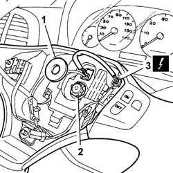
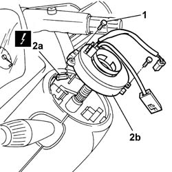

5580C12 CLOCK SPRING FOR AIR BAG MODULE ON STEERING WHEEL R R
- Path
- Procedures > 55 ELECTRICAL EQUIPMENT > 5580 SPECIAL ACCESSORIES > 5580C AIR BAG SYSTEM > 5580C12 CLOCK SPRING FOR AIR BAG MODULE ON STEERING WHEEL R R
- Kind
- repair procedure (removal / refitting; the operation number is the code)
- Applies to
- all engines; all production periods
- Interactive page
- https://sloeber94.github.io/elrnDB-fDct/en/#/244001403
Applies to: all engines; all production periods
 Removing
Removing
 Refitting
RefittingOp. 5580C18 AIR BAG MODULE - R+R
1. Remove the protective ring nut for the steering wheel fixing nut.
2. Undo the steering wheel fixing nut.
3. Disconnect the electrical connector for the radio controls.
4. Remove the steering wheel.

Applies to: all engines; all production periods
1. Undo the fixing bolts and move the clock spring aside.
2. Disconnect the electrical connection (2a) and remove the clock spring (2b).

Applies to: all engines; all production periods
Refitting
Removing- Connect the electrical connection for the clock spring.
- Fit the clock spring in position and tighten the fixing bolts.
- Position the steering wheel in the housing and tighten the fixing nut to the recommended torque.
 | Value - daNm | Fastening | Component | Ø |
|---|---|---|---|---|
. | 5 | Nut | STEERING WHEEL | M16 X 1.5 |
- Connect the electrical connector for the radio controls.
- Fit the protective ring nut for the steering wheel fixing nut.